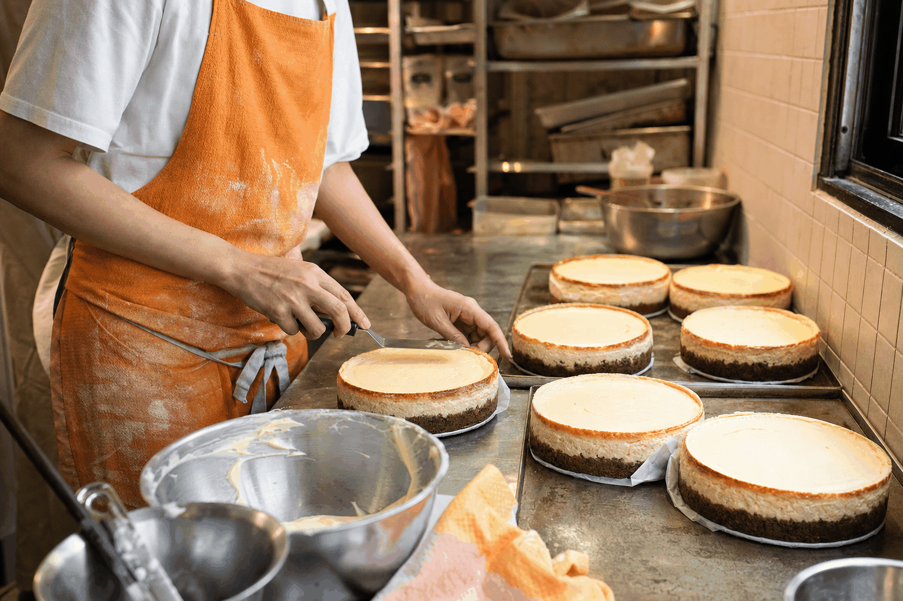

Where it started
A family recipe, reimagined.
Queso Bakehouse started in a home kitchen in Hong Kong with one family cheesecake recipe and two sisters who could not agree on how sweet it should be.
Soft-launched in February 2025, Queso has since become known for handcrafted cheesecakes made fresh in a licensed kitchen.
From naked Birthday Suit cakes to custom Canvas creations with edible photo prints, every cake starts with the same family recipe - just dressed differently for the occasion.

What Queso stands for